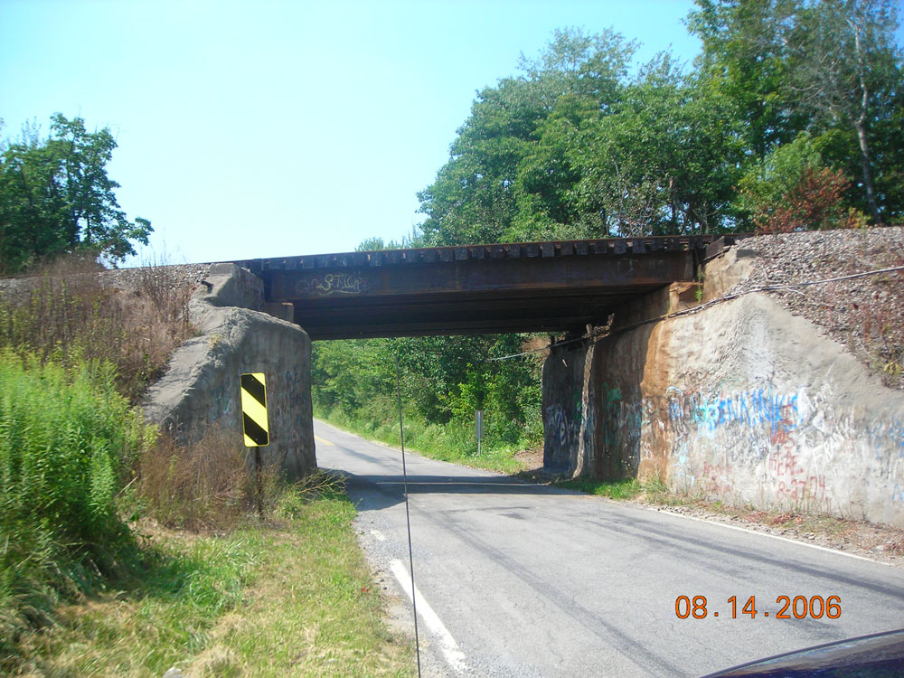

Five Points
Five Points is a place marked by a five-way intersection located about a mile and a half behind the Youngstown-Warren Regional Airport on Kings Graves Road. It is marked by a greenish streetlamp. By making a right under the streetlamp you'll head toward Amy Boyle Road. Make a left on this and you'll come to a set of railroad tracks. It's said that if you stop on these tracks, put your car in neutral, and honk three times, a ghost train will appear, barrelling straight at you. If you make a diagonal left at Five Points you'll come to an old bridge. Pull over just past it and look back; legend has it that you'll be able to see a ghostly old man walking there.

Other Five Points legends include hanging corpses, the ghosts of drowned witches, and a ghostly car that will play chicken with you. Apparently the ghost stories have inspired so many people to visit Five Points that the police patrol it regularly, so watch out. Incidentally, there are eleven towns named Five Points in Ohio alone; make sure you get the Trumbull County Five Points.
Back